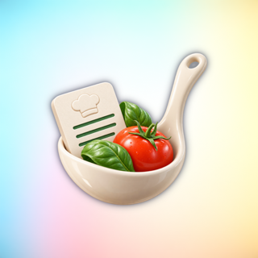
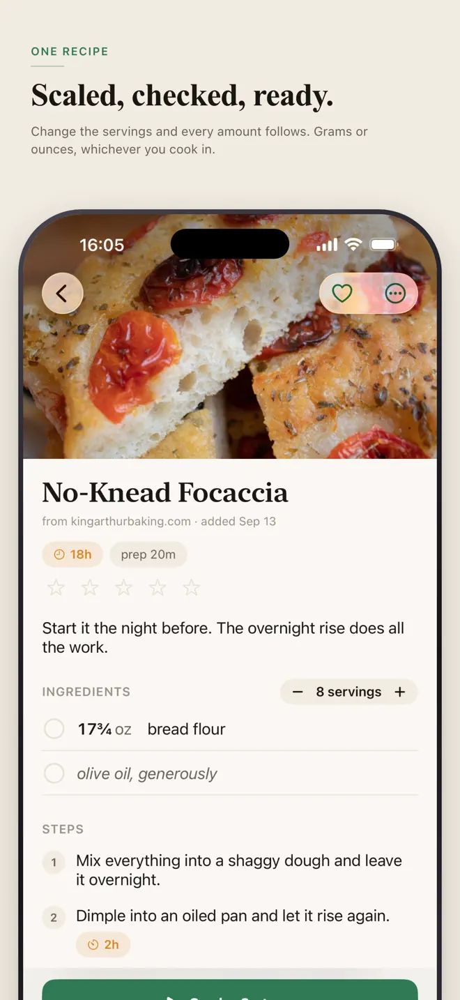
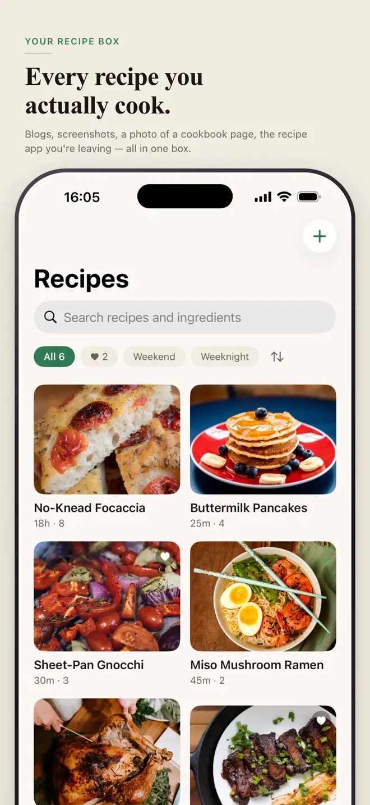
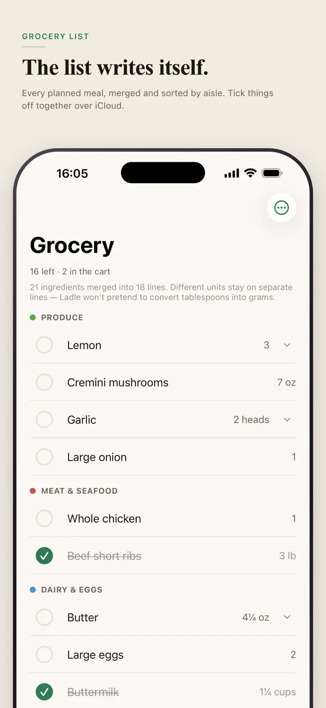
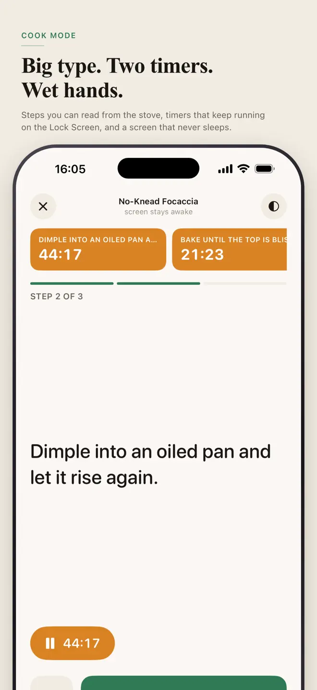

Paste anything. Get a recipe you can cook from.
A recipe you actually cook rarely arrives in a tidy format: a screenshot from a friend, a photo of a page, a wall of text buried under someone's life story. Ladle takes whatever you paste and turns it into a recipe with real ingredients and real steps. The reading happens on your phone, so it works in a kitchen with no signal.
iPhone and Android · Reads recipes on your phone · No account



What it does
A cookbook that pulls its weight
Paste, snap or share
Text, a photo, or a share from your browser becomes a recipe with ingredients and steps.
Read on your phone
The recipe is parsed on the device. Nothing leaves it, and it works with no signal.
Plan the week
Drop recipes onto days and every ingredient lands in one grocery list.
A list laid out like a store
Ingredients are grouped the way a store is laid out, so you walk the aisles once.
Several timers at once
Cook with more than one timer running. On iPhone they show on the Lock Screen, so you do not unlock with wet hands.
Shop together
Share the list with whoever else shops and tick things off from either phone.
How it works
From a screenshot to dinner
Save it
Paste the text, snap the page or share the link.
Plan it
Pick the days. The grocery list builds itself.
Cook it
Step by step, timers running.

Your data
A cookbook that sits on the shelf and waits
- No account, no server, no feed.
- Recipes are read on your phone — nothing is sent away to be parsed.
- On iPhone, recipes sync across your own devices through iCloud.
Questions
Before you download
How do I add a recipe to Ladle?
Paste text, take a photo of a page, or share a page from your browser. Ladle turns it into a recipe with ingredients and steps.
Does recipe import need the internet?
No. The reading happens on your phone, so it works in a kitchen with no signal.
Does Ladle make a grocery list?
Yes. Plan the week and every ingredient lands in one grocery list, grouped the way a store is laid out.
Can two people use the same grocery list?
Yes. Share the list with whoever else shops and tick things off from either phone.
Do I need an account?
No. There is no account, no server and no feed.
Which devices and languages does Ladle support?
iPhone (iOS 18 or later) and Android. The app is available in 7 languages: English, Chinese, French, German, Japanese, Korean, Vietnamese.
- Made for
- Home cooks who save recipes from screenshots, photos and web pages and plan meals for the week
- Platforms
- iPhone (iOS 18 or later) · Android
- Languages
- English, Chinese, French, German, Japanese, Korean, Vietnamese
- Category
- Food & Drink
- Developer
- Ho Van Dai
- Page updated